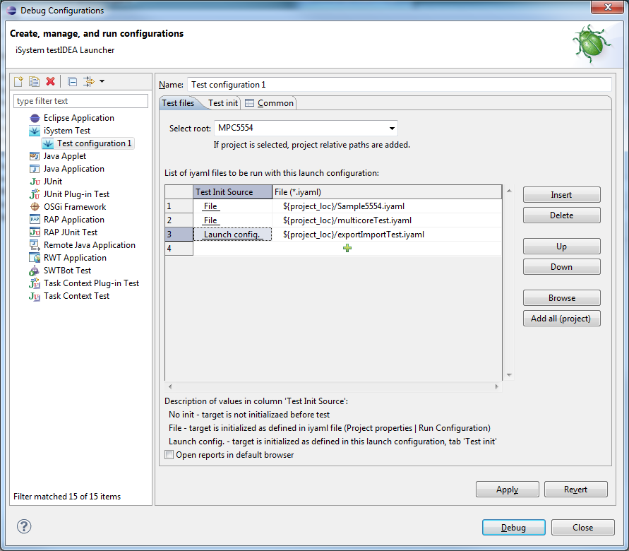
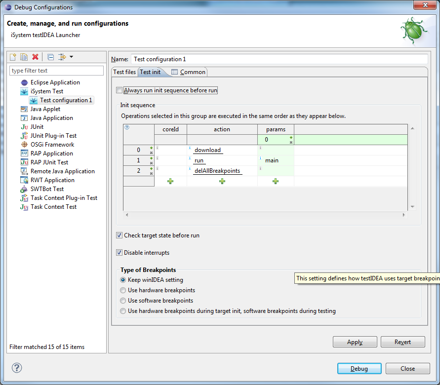

To make it possible for Eclipse users to use one application for development and testing, testIDEA has also been released as Eclipse plug-in. Menus have been adapted to co-exist with other plug-ins, and launchers have been implemented to better integrate testIDEA with existing Eclipse framework. testIDEA launcher provides functionality of running several testIDEA files with single action. This functionality is not available in standalone testIDEA.
Recommendation
Eclipse enables users to configure views and editors in many
different ways. However,
for most use cases it is recommended to use testIDEA functionality
in testIDEA perspective (Window | Open Perspective | Other... |
testIDEA). Although editing and running of iSYSTEM tests is possible also in
other perspectives, they originally do not show testIDEA's Test Status view,
which displays warnings and errors during editing, and test results
after test run. Not all testIDEA menus and tool-bar buttons are
visible in other perspectives.
Window |
Open Perspective | Other... | testIDEA. If we change the
layout of this perspective, but would like to restore it to the
original settings, we can select menu command iTools | Reset test
view.File | New | Test
Specification file. A wizard opens, where we can select project
and enter file name.
Run As or Debug As | testIDEA
launch. If the file is opened in editor, it should be saved before
launching, so that results can be unambiguously shown in editor.
File | Export, and File |
Import open a wizard, which provides several export/import
formats. For testIDEA export/import we should
select testIDEA | Test Cases and
click Next button. The standard testIDEA
export/import dialog opens.Export and Import
buttons in its tool-bar when testIDEA file is displayed there. These
buttons open testIDEA export/import dialogs directly.

The first column defines, how to initialize target before running tests from the selected file - init sequence can be taken from the file, it can be skipped, or init sequence specified in this launch configuration (tab Test init) can be used.The second page contains target init sequence for this launch configuration. It is used, when Launch configuration is selected as Test Init Source in the table above:

When tests are run with launch configurations, they are read from file, not editor. It is recommended to save all editors before running tests.